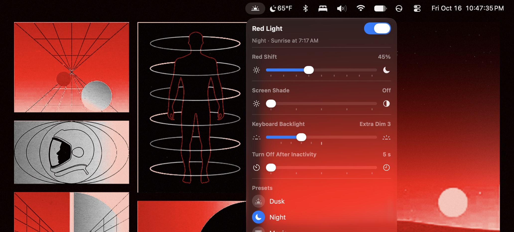

A menu bar app that takes every trace of blue out of your Mac at sunset — across a thirty-minute fade you never notice — with presets for after dark that it learns to pick for you.

Controlled human studies, published in the journals that matter. Every number below links to the paper it comes from.
Our results may help the many people who sit in front of screens in the evening or at night to fall asleep faster, feel sleepier, and have a more stable melatonin phase by spectrally tuning the visual display light without compromising the visual appearance.
Red Light for Mac reduces evening blue light exposure. It is not a medical device and makes no medical claims.
Built from the system's own controls, type and colour: SF Pro at the standard sizes, labelColor and secondaryLabelColor, Liquid Glass. One click from the menu bar, sliders that apply live as you drag. Nothing new to learn, nothing that looks bolted on.
Night Shift warms. Red Light removes: at 60% the blue channel sits at zero at the display's own transfer table, and text stays crisp. It walks there across a thirty-minute fade from sunset, in steps too small to catch.
At night, Red Light reads your Mac's ambient light sensor. A lit room gets no red at all. As the lamps go off, Red Shift rises with them, easing in over half a minute. Nudge it on a few nights and it learns how you like your room.
Dusk to ease in, Night to settle, Movie to drop the whole screen back, Deep night for the last hour — each one moves the display, the keyboard and the screen shade together. Settle on the same thing three nights out of fourteen and it quietly becomes your default, sunset time included. It never fights a change in the moment. It just stops needing to be told.
MIT licensed, so audit every line. Location is read on the Mac for sunrise and sunset and never leaves it.